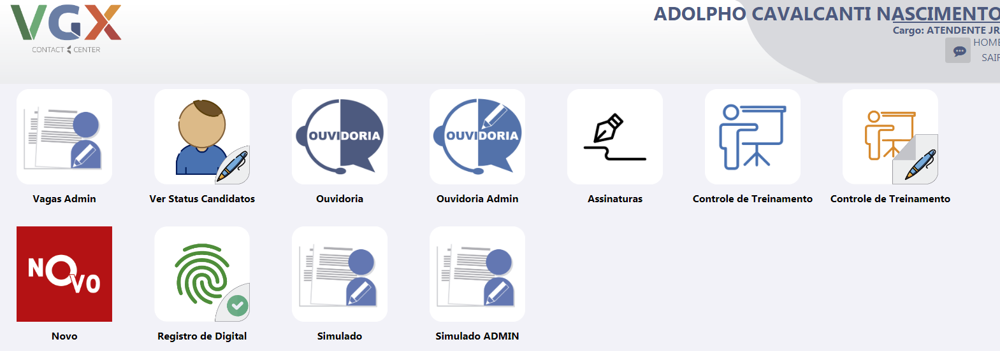

Página inicial do painel
Página Simulado
Após clicar em "Simulado" na página inicial, o usuário visualizará o simulado que ele terá que fazer. Após finalizar o simulado o candidato será redirecionado para a página inicial do painel e ele poderá repetir este processo até ele ter realizado todos os simulados que foi designado a ele fazer.
Página inical - sem Simulados
Caso o usuário clique em "Simulado" na página inicial e não exista mais simulados para serem respondidos por ele, aparecerá a seguinte mensagem o informando: "Não existe provas para serem feitas no momento!".
Página Simulado ADMIN
Após clicar em "Simulado ADMIN" na página inicial, o usuário visualizará a página de configurações, referentes as configurações do simulado.
Página Listar Candidato
Após clicar em "Simulado ADMIN", e clicar em "Listar Candidato", o usuário visualizará a página de listagem de candidatos com informações como: (NOME, CPF, QUANTIDADE DE ACERTOS e MODELO DE PROVA). Ou seja, um mesmo colaborador poderá realizar vários simulados de tipos diferentes e a coluna "Modelo de Prova" informa qual o tipo de prova que foi feito por determinado colaborador.
Página Criar Simulado
Após clicar em "Simulado ADMIN", e clicar em "Criar Simulado", o usuário visualizará a página para criar novos simulados.
Página Habilitar Tipos de Simulado
Após clicar em "Simulado ADMIN", e clicar em "Habilitar Tipos de Simulado", o usuário visualizará a página "Tipos Simulado", aqui será adicionado quais usuários poderão fazer determinado Simulado.
Você terá a opção de fazer o download do modelo de arquivo e como deve ser preenchido. Após o arquivo está pronto para fazer upload, clique em 'Escolher arquivo' ou arraste o arquivo até a zona tracejada conforme imagem abaixo e depois clique no botão "Enviar arquivo".
Página Conferir dados do arquivo
Após clicar em "Simulado ADMIN", clicar em "Habilitar Tipos de Simulado", clicar em "Enviar arquivo" o usuário visualizará a página para conferir dados do arquivo, após conferir se os dados estão corretos clique em "Confirmar".
Assim, o sistema poderá reconhecer os colaborados que estão aptos a responderem os simulados de acordo com os tipos de simulados criado anteriormente.
Página Habilitar Tipos de Simulado - OBSERVAÇÃO:
Após clicar em "Simulado ADMIN", e clicar em "Habilitar Tipos de Simulado", pode-se notar no canto esquerdo da tela uma imagem com o exemplo de como dever ser criado o arquivo para habilitar os candidatos a realizarem os simulados.
Logo abaixo, existe um botão para limpar os registros criados anteriormente. Isso serve nos casos que o colaborador já foi habilitado anteriomente com os tipos de provas 1, 2 e 3 por exemplo, suponhamos que foi criado um novo simulado do tipo 4 que deve ser atribuido ao colaborador. Então limpa-se os registros anteriormente e criar um novo arquivo com o novo "tipo" de prova que foi criado.
Ficando assim: 1,2,3,4.